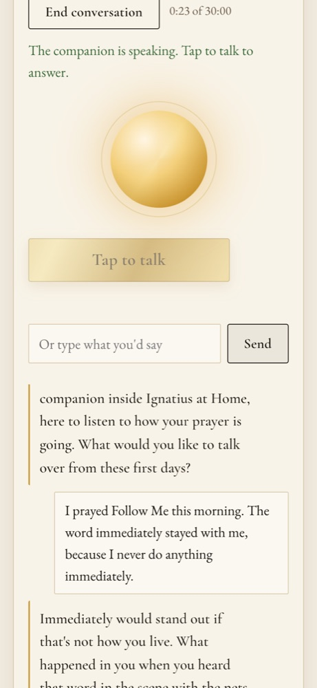

A spoken conversation with the prayer companion. One tap on the home page starts it.

?talk&r=…&now=1 and starts at once (the tap unlocks audio on iPhone).POST /api/talk/session: talk.context builds the companion's instructions: its prompt (or your edited one), About me, your companion notes, the time where you are, when you last talked (“about 3 hours ago”), its memory, recent transcripts, and the retreat day by day.POST /api/talk/turn (the brain replies) → POST /api/talk/speak, one sentence of audio at a time.POST /api/talk/end saves the transcript; older ones are condensed into the companion's memory.{user}/conversations.json: transcripts and memory; talk_usage.json: free minutes used today{user}/profile.json: your edited companion instructions and notesOpenAI gpt-live-1 over WebRTC (voice Marin by default), or xAI grok-voice-latest (voice Eve). Up to 30 minutes a call; free accounts get 60 seconds a day.
Free: Jetstream muse-glimmer. Full: Claude Fable 5.1, Opus 5.5 or Haiku 4.5 (instructions cached), or OpenAI gpt-5.5 / gpt-5.4-mini.
Microsoft neural voices through edge-tts, default en-US-AndrewMultilingualNeural. Listening uses the browser's own speech recognition.
Older conversations are condensed by the server's model (Claude Opus 5.5), or the free model for free accounts.